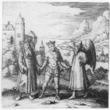
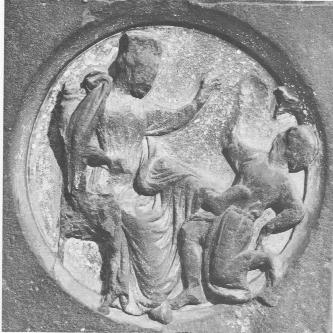
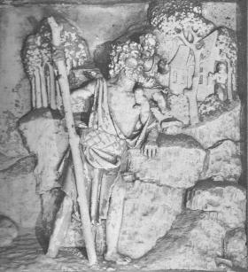
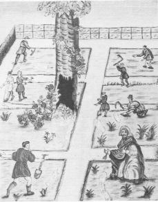
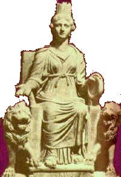

Chapitre 2 Les principes qui composent le Mercure des Sages
I Le but de ceux qui s'appliquent à cet art est de purger le Mercure1 de différentes manières : les uns le subliment par l'adjonction de sels et le nettoient de diverses impuretés, les autres le vivifient uniquement par lui-même, et ils affirment avoir, par la répétition de ces opérations, fabriqué le Mercure des Philosophes2 ; mais ils se trompent, parce qu'ils ne travaillent pas dans la nature, qui seule est perfectionnée dans sa nature. Qu'ils sachent donc que notre eau, composée de nombreux éléments, est néanmoins une chose unique faite de diverses substances coagulées à partir d'une seule essence. Voici ce qui est requis pour la préparation de notre eau (dans notre eau, en effet, se trouve notre dragon igné) : premièrement, le Feu3 qui se trouve en toutes choses, deuxièmement, la liqueur de la Saturnie4 végétable5, troisièmement, le lien du Mercure6.
II Le feu est celui d'un soufre minéral7. Cependant il n'est pas proprement minéral et moins encore métallique; mais sans participer de ces deux substances il tient le milieu8 entre le minéral et le métal, Chaos ou esprit: en effet, notre Dragon igné, qui triomphe de tout, est cependant pénétré par l'odeur de la Saturnie9 en un seul corps admirable; et pourtant il n'est point corps, puisqu'il est totalement volatil, ni esprit, parce que dans le feu il ressemble à du métal fondu. C'est donc, en vérité, un Chaos, qui tient lieu de Mère10 à tous les métaux ; car je sais en extraire toutes choses, même le Soleil et la Lune, sans le secours de l'Élixir transmutatoire, ce qui peut être attesté par qui l'a vu aussi bien que moi. On appelle ce Chaos notre Arsenic, notre Air, notre Lune, notre Aimant, notre Acier, mais toujours sous divers aspects, parce que notre matière passe par différents états avant que du menstrue11 de notre prostituée soit extrait le Diadème royal.
Apprenez donc qui sont les compagnons de Cadmus12 et quel est ce serpent qui les a dévorés, et quel est ce chêne creux13 où Cadmus cloua le serpent. Sachez quelles sont les colombes de Diane, victorieuse du lion en l'apprivoisant, ce Lion vert, dis-je, qui est vraiment le Dragon babylonien, détruisant tout par son vénin. Enfin sachez ce qu'est le caducée14 de Mercure, avec lequel il opère des merveilles, et quelles sont ces Nymphes15 qu'il instruit par ses incantations. Apprenez tout cela, si vous voulez atteindre l'objet de vos désirs.
1. Je rappelle qu'il y a deux Mercures : le 1er Mercure (ou Sel des Sages, appelé encore Mercure des philosophes) et le double Mercure ou dissolvant universel (Mercure philosophique). Il semble qu'ici, Philalèthe veuille parler du 1er Mercure mais il s'agit d'un leurre. Je rappelle en effet que le Mercure commun désigne aussi le 1er composant du Mercure philosophique. Une équivoque est donc savamment entretenue par les Adeptes qui créent une confusion entre le Sel des Sages et le double Mercure.
2. Fulcanelli (les Mystères, p.126) nous parle de ce Mercure :"Une dissolution particulière et peu employée nous est exprimée par l'un des cartouches que nous étudions. C'est celle du vif-argent vulgaire, afin d'en obtenir le mercure commun des Philosophes...Le servus fugitivus dont nous avons besoin est une eau minérale et métallique, solide, cassante, ayant l'aspect d'une pierre et de liquéfaction très aisée..."
Voila qui est peu clair et dans cette phrase sibylline, Fulcanelli confond l'ignorant en mélangeant le Mercure commun (ou 1er Mercure) avec le Mercure philosophique. Il revient sur ce sujet, p.199 :
"...Une fleur, qui semble sortir du vase, s'épanouit sous une forme rappelant celle des lis héraldiques. tous ces symboles se rapportent au dissolvant, ce mercure commun des Philosophes..."
Fulcanelli est nettement envieux (cf. note 1).
3. Il doit s'agir ici du feu vulgaire (Vulcain ardent).
4. Il s'agit là du double Mercure, composé vraisemblablement de deux oxydes dont l'un est certainement de l'oxyde de plomb (litharge ou minium), l'autre étant un corps alcalin (carbonate de potasse ou carbonate de soude)
5. Le dragon igné évoqué une ligne plus haut, c'est-à-dire le compost. Son autre image est la chimère (cf. supra). Ce dragon igné doit être rapproché de l'homme double igné de B. Valentin ; il figure le Soufre double (la résine de l'or et l'or lui-même qui ne correspond pas au métal, sauf dans la voie archimique).
6. C'est le conducteur : rapprochons la clef VIII de la figure XI du traité de Lambsprinck.
FIGURE Ilégende: "Le Père et le fils sont unis par les mains avec le conducteur. On doit sous-entendre ici le corps, l'Esprit et l'Ame".
texte :
"Le père, un vieillard est issu d'Israël, - Il n'a qu'un fils unique...- Un conducteur lui impose douleur sur douleur...- Le conducteur a parlé en ces termes au fils : - Je suis venu ici afin de te conduire en tous lieux, - A l'extrême cime de la montagne la plus haute..."
(in G. Ranque, la Pierre Philosophale, pp. 180-181).
Le conducteur, figurant sous l'aspect d'un vieillard avec des ailes (un ange) représente le lien du Mercure qui permet la stabilité du dissolvant universel, donc du Mercure philosophique au même titre que l'évêque de B. Valentin. Il s'agit du messager, de l'appariteur (viator), i.e. le moyen, milieu ou procédé par lequel le principe Soufre peut être uni au principe Mercure ou Sel. Fulcanelli nous dit enfin qu'il s'agit là du premier dissolvant, mercure commun des Sages et loyal serviteur de l'artiste (loyal = probe et serviteur= conducteur).

FIGURE IIC'est une nouvelle fois pour Fulcanelli l'occasion d'induire en confusion l'étudiant :
"...Une reine, assise sur son trône, renverse d'un coup de pied le valet qui, une coupe à la main, vient lui offrir ses services."
et de citer Sabine stuart de Chevalier (Discours philosophique sur les Trois Principes, ou la clef du Sanctuaire philosophique) :
"...ils [les philosophes] connaissent aussi un dissolvant qui le [le Mercure] convertit en eau argentine pure et naturelle ; elle ne contient ni ne doit contenir aucun corrosif..."
notons que le valet tenait la coupe de la main droite ; cette coupe correspond à un vase sacré, ou urne funéraire (arcula, arca). Arca est là pour l'arche de Noë. Cette arche sert d'amorce pour la parabole du Déluge et du renversement des pôles qui permet ainsi de concevoir l'allégorie du tournoiement du monde que nous avons étudié ailleurs. En outre Arcas est le fils de Jupiter et de Callisto en rapport avec l'ours et l'étoile pôlaire. Cette coupe contracte d'étroits rapports avec la rosée de mai : il semble y avoir ici deux possibilités ; il s'agit probablement d'un oxyde d'étain ou peut-être de zinc si l'on considère le fondant mais si l'on considère la terre alumineuse, ce peut être une référence à l'alun ammoniacal qui produit de l'alumine pure. L'allusion à l'absence de corrosif est ambigue : certes, le dissolvant universel, par le biais de son humide radical, se suffit à lui-même mais des composés alcalins doivent forcément entrer dans sa composition. Nous n'en sommes pas encore à briser le sceau vitreux d'Hermès (1).
7. Ce soufre minéral désigne un cinabre. Lequel choisir ? d'après nos déductions, la blende, la galène, la sphalérite peut-être ou l'or mussif (sulfure stannique) pourraient prétendre à participer à la constitution du Sel des Sages ou du Mercure philosophique...Voyez ici pour d'autres développements.
8. Philalèthe parle d'un corps dont d'autres Adeptes ont dit qu'il était à la fois pierre et non pierre. S'agirait-il du Sujet des Sages ? et alors d'un constituant du Sel ou du Mercure ? il pourrait s'agir d'un métalloïde trivalent (azote, phosphore, arsenic, antimoine)...On prendra garde d'oublier que l'étain se présente sous plusieurs formes cristallines dont l'une, l'étain gris, n'est pas métallique. Nous ajouterons que les Adeptes ont l'habitude de dire que la Materia prima est un sujet disgracié de la nature et qui offre une apparence repoussante, littéralement dégoutante ; cela peut servir à expliquer que Fulcanelli insiste sur ce point dans les DM, II, p.378 :"...d'où cette difformité buccale, cabalistique, qui imprime au visage de notre gnomide sa physionomie caractéristique."
9. le dissolvant universel (notez que Philalèthe ici ne dit point végétable).
10. ou plutôt de mer : Fulcanelli nous en parle (Les Mystères, p.96) :"...de la fontaine qui, chez les auteurs arabes porte le nom d'Holmat. ils placent la source fameuse dans le Modhallam, terme dont la racine signifie Mer obscure et ténébreuse, ce qui marque bien la confusion élémentaire que les Sages attribuent à leur Chaos ou matière première."
11. Philalèthe nous parlera plus loin de ce menstrue. Fulcanelli (Les Mystères, p.171) nous assure que le nostoc -qu'il compare sans le dire explicitement au Sel des Sages- a été appelé par d'autres auteurs : crachat de Lune, Archée céleste, Beurre de terre, Graisse de rosée, vitriol végétal, flos coeli, etc. L'Adepte commente ensuite la ceinture que porte Saint-Christophe (planche XLII, de l'Hôtel Lallemant, Légende de saint Christophe) :

FIGURE III
"La ceinture d'Offerus est piquée de lignes entre-croisées semblables à celles que présente la surface du dissolvant lorsqu'il a été canoniquement préparé...Et ce signe, les vieux auteurs l'ont appelé Sceau d'Hermès, Sel [Scel] des Sages...,la marque et l'emprunte du Tout-Puissant, sa signature, puis encore Etoile des Mages, Etoile polaire, etc..."
Ceinture en latin peut se traduire par cingulum (ceinture,baudrier, ventrière), zona (ceinture, constellation d'Orion) ; : ventre peut se traduire par alvus (ventre, ceinture, excréments, déjections, ruche, coque de navire). Tous ces termes sont familiers à ceux qui ont jeté les yeux sur les textes classiques ou modernes : ils ont tous un rapport avec le vase de nature. Les "fèces" sont souvent citées par les Anciens et l'expression "crachat de Lune" est synonyme du dissolvant universel. Aussi doit-on pour l'instant rester prudent quant au sens à donner au "crachat de Lune" ; là encore Fulcanelli a-t-il sans doute brouillé les cartes et confondu le Sel des Sages et un composant du dissolvant...Quant aux lignes entrecroisées, elles renvoient à la symbolique du gateau des Rois (1) ; nous avons étudié cela dans une section consacrée au Mercure philosophique (1).
12. Nicolas Flamel, dans ses Figures Hiéroglyphiques évoque Cadmus (Cadmos) dans le dernier commentaire de la troisième figure :

FIGURE IV
" Quelque tems après, l’Eau commence à s’engrossir et coaguler davantage, venant comme de la Poix très-noire ; et enfin vient Corps et Terre, que les Envieux ont appellée Terre fétide et puante car alors, à cause de la parfaite putréfaction (qui est aussi naturelle que toute autre), cette Terre est puante, et donne une odeur semblable au relent des Sépulchres remplis de pourriture et d’ossemens encore chargez d’humeur naturelle. Cette Terre a été appellée par Hermès la Terre des feuilles, néanmoins son plus propre et vrai nom est le Laiton qu’on doit puis après blanchir. Les anciens Sages Cabalistes l’ont décrite dans les Métamorphoses sous l’Histoire du Serpent de Mars, qui avoit dévoré les Compagnons de Cadmus, lequel le tua en le perçant de sa Lance contre un Chêne creux. Remarque ce Chêne..."
Nous avons vu plus haut que le chêne peut renvoyer au javelot, point qui nous semble des plus importants. En effet, dans le combat qu’oppose le dragon écailleux (Matera prima), il est fait référence au javelot de façon constante ; on peut citer Fulcanelli (Les Mystères, p.95) :
"Aussi, dédaignant l’arc et les flèches avec lesquelles, à l’instar de Cadmus, il transperça le dragon..."
La légende veut en effet que Cadmus (Cadmos) reçut de la Pythie l’ordre de suivre une vache qui porterait sur ses flancs un disque semblable à celui de la Lune. Cadmos trouva l’animal en Phocide et suivit la bête jusqu’en Béotie. L’animal se coucha alors et Cadmos voulut l’immoler : il s’aperçut alors que la fontaine où il allait puiser l’eau du sacrifice était gardée par un dragon. Il le tua et sema les dents du monstre, qui donnèrent naissance à une multitude de géants qui s’entretuèrent. Nous retrouvons Cadmos (Les Mystères, p.181) quand Fulcanelli commente le mythe de Tristan de Léonois :
"Ce combat singulier des corps chimiques dont la combinaison procure le dissolvant secret (et le vase du composé), a fourni le sujet de quantité de fables profanes et d’allégories sacrées. C’est Cadmos perçant le serpent contre un chêne..."
En outre, la fille de Cadmos, Autonoe, est la mère d'Actéon qui est mort, changé en cerf, dévoré par des chiens. Le terme Azoth qui est le titre de l'un des grands livres d'alchimie -Azoth sive Aureliae occultae philosopharum, attribué à Basile Valentin, Londres, 1613 ; Paris, 1624.

FIGURE V
Selon Fulcanelli, l’auteur de ce traité serait senior Zadith à qui l’on doit la Tabula chymica, ex arabico sermone latino facta (XIIe siècle)- est lié plus qu'on ne croit à Cadmus : il ne s'agit point ici de l'azote bien sûr mais d'un mot qui doit être compris selon la cabale phonétique ; on peut risquer un rapprochement avec Zetho(s), fils de Zeus et d'Antiope, frère jumeau d'Amphion ; ils furent abandonnés tous deux sur le mont Cithéron, mont de Béotie célèbre par ses troupeaux et théâtre des orgies des Bacchantes. Amphion doit être rapproché d'Orphée car il fut remarqué par Apollon qui lui offrit une lyre. La légende affirme que Zéthos et Amphion tuèrent Lycos, fils de Cadmos, et attachèrent son épouse, Dircé, par les cheveux aux cornes d'un taureau sauvage qui la traîna sur les rochers jusqu'à ce que mort s'ensuive. On ajoute qu'Amphion fut tué par les traits justiciers d'Apollon et d'Artémis pour avoir insulté leur mère, Léto.
13. Nous avons ailleurs longuement discuté de ce vieux chêne creux ; c'est une variation sur le thème de l'athanor secret dont on a vu qu'il pouvait être symbolisé aussi par Cybèle et ses deux lions :

FIGURE VI
Atalante et Hippoménês sont les 2 lions de Cybèle. En effet, Atalante renvoie aux légendes béotiennes et arcadiennes. Elle fut battue à la course à pied par Hippoménês qui devint son mari. On raconte que Hippoménês utilisa un stratagème pour battre Atalante : Aphrodite conseilla à Hippomenes de semer trois pommes d’or, cueillies dans le jardin des Hespérides, dans la carrière où devait se dérouler la course. Atalante s’arrêta par trois fois pour les ramasser et ne put l’emporter sur Hippomenes, qu’elle épousa. Ayant insulté Zeus (mais d’autres disent Cybèle) en se livrant, dans un sanctuaire, à leurs transports amoureux, les deux époux furent métamorphosés en lions, que Cybèle attela à son char.Le mythe de Cybèle est inséparable du Pont-Euxin (mer Noire) et la déesse est originaire de Phrygie qui constitue actuellement une partie de la Turquie. Pline l’Ancien (23-79), naturaliste et écrivain latin a laissé dans son Histoire Naturelle, vaste compilation scientifique faisant le point des connaissances de l’époque, des allusions nettes à la Phrygie ; il y traite notamment des sels. On pourra compléter l’étude de l’Histoire Naturelle par l’examen d’un autre travail, l'Histoire chimique du sel et des sels, qui est facilement accessible (Claude Viel). Quant au chêne, il renvoie à la variété rouvre dédiée à Jupiter et désigne sans doute de l'oxyde d'étain. Pour certains auteurs, il renverrait à la variété kermès (par allusion à la kermésite qui est du trisulfure d'antimoine). L'adjectif vieux désigne l'autre composant du dissolvant qui doit être de la litharge. Le dernier adjectif "creux" renvoie à cava qui désigne un lieu sombre et enfoui d'où l'on peut extraire du salpêtre.
14. Ce caducée est là pour caduceus = verge que portaient Mercure et les envoyés, les hérauts. On peut citer aussi caduceator : envoyé, parlementaire, ambassadeur et caduciter = en précipitant. Le caducée apparaît peu dans les textes et s'avère assez complexe à analyser. Fulcanelli le cite aux DM, I, p.428 comme :"la marotte des fous, qui est positivement un hochet, objet d'amusement des tout petits et joujou du premier âge, ne diffère pas du caducée...[C'est] le signe révélateur du mercure."
et plus loin :
"Car le bâton ou sceptre que portaient les offciers de Hérauderie s'appelait caducée comme la verge d'Hermès."
L'Adepte revient au caducée lors de l'évocation du bateau Argo (la fontaine du Vertbois) et nous précise :
"Quant au caducée, c'est chose connue qu'il appartient en propre au messager des dieux, avec le pétase ailé et les talonnières (1)."
Et d'évoquer le coq, dont l'étymologie rejoint celle du caducée, puis de conclure :
"...consacré à Mercure comme annonciateur de la lumière".
Le coq, avec le renard, constitue le symbole d'un état intermédiaire entre le fixe et le volatil qui précède sans doute la cristallisation, résultat tangible de l'accrétion du principe Soufre à la résine de l'or. Plus loin, Fulcanelli se montre exceptionnellement ésotérique lorsqu'il écrit :
"C'est ainsi que de laboureur on devient héraut (terme dont la racine grecque veut dire : qui porte le Caducée)"
Que représente donc exactement le caducée ? en latin, le caducée se dit caduceus ; par rapprochement phonétique, nous trouvons caducus (= qui tombe). Or, nous avons déjà vu que ce terme pouvait être rapproché de cado et de cassito. Les bois du cerf sont également caducs. Le caducée pourrait ainsi être un symbole d'une partie du dissolvant universel. C'est un emblème très employé par Nicolas flamel :

FIGURE VII
Il nous en parle dans ses Figures Hiéroglyphiques :
"Premièrement, au quatrième feuillet il peignoit un jeune Homme avec des ailes aux talons, ayant une Verge caducée en main, entortillée de deux Serpens, de laquelle il frappoit un Casque qui lui couvroit la tête. Il sembloit, à mon avis, le Dieu Mercure des Payens. Contre lui venoit courant et volant à ailes ouvertes, un grand Vieillard, qui avoit sur la tête une Horloge attachée et en ses mains une faux comme la Mort, de laquelle, terrible et furieux, il vouloit trancher les pieds à Mercure."
Ce vieillard a été étudié par Fulcanelli : il nous dit (DM, I, p.241) :
"On l'appelle encore dragon noir couvert d'écailles, serpent venimeux, fille de Saturne...".
De même, Limojon de Saint-Didier nous assure t-il dans sa Lettre aux Vrays disciples d'Hermès (in Le Triomphe hermétique) :
"notre vieillard est notre mercure ; que ce nom lui convient parce qu'il est la matière première de tous les métaux ; le Cosmopolite dit qu'il est leur eau..." (DM, I, p.338).
C'est encore le pèlerin ou voyageur de Saint-Jacques de Compostelle, où N. Flamel s'est incarné sous l'allégorie du Mercure. Fulcanelli insiste aussi sur une cithare que tient un grand vieillard qui figure au portail occidental de Chartres (XIIe siècle) : cette cithare est semblable à la lyre d'Orphée ; Orphée est coiffé du bonnet phrygien. Une gravure du musée de Palerme nous montre des animaux domestiques ou sauvages, des oiseaux de toute espèce faisant cercle autour de lui : ils écoutent et s'arrêtent, soudain charmés ou domptés par les accents magiques que le musicien tire de son instrument. Pour nous, ce vieillard, avec sa faux et ses ailes a une double signification, d'abord en tant que corps destructeur du sujet des Sages : On sait que Jacob lutta une nuit entière contre un ange du Seigneur, ce qui lui valut le nom d'Israël : « Celui qui lutte contre Dieu », i.e. par cabale : contre le soufre. L'ange est souvent associé au corps qui détruit le Sujet des Sages afin d'en extraire la première matière ou Mercure. C'est la même allégorie qui est utilisée dans l'Annonciation.
15. Le symbolisme qui se rattache aux nymphes peut, selon nous être ainsi analysé : le miel (en latin, mel) renvoie à Melissa, nymphe qui trouvait le moyen de recueillir le miel ; c'était la fille de Melissus et elle a nourri Jupiter.On connait aussi plusieurs nymphes utilisées régulièrement comme symboles par les Adeptes : Néréide (mer) ; Naïade (fleuve) ; Dryades (forêt de chêne) ; Méliades (frêne).